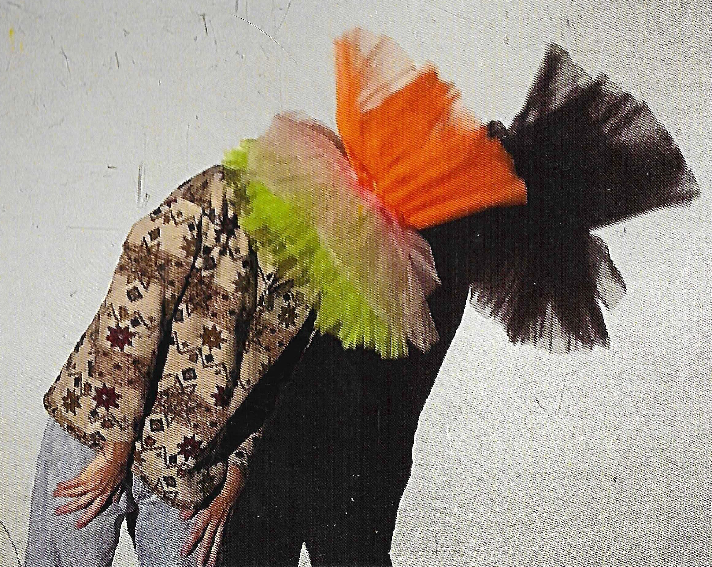

La Plasta es un colectivo artístico-educativo interesado en la dimensión experimental, corporal y plástica de las artes como herramienta educativa. Nuestros proyectos buscan ofrecer experiencias de aprendizaje que sitúan la exploración plástica y sensorial en el centro, fomentando el contacto directo con los materiales y dotando a los participantes de autonomía para experimentar con ellos. Trabajamos desde la creación de instalaciones artísticas de juego, propuestas teatrales sensoriales y mediaciones en espacios expositivos.
La Plasta nace de la urgencia de hacer estallar los límites de lo establecido, desafiando las formas rígidas y poco flexibles. "¡Plasta, eres un plasta!" decimos, como quien juega con un globo a punto de reventar, porque solo jugando podremos encontrar aquello que buscamos. Nosotras, blandas y maleables como esa masilla que se acumula bajo las uñas, nos adaptamos, nos deformamos, exploramos nuestras propias transformaciones. Creemos que el aprendizaje surge de los cuerpos que mutan y de la experiencia directa, de quienes osan meter las manos en la masa de aquello que parece que todos ignoran.